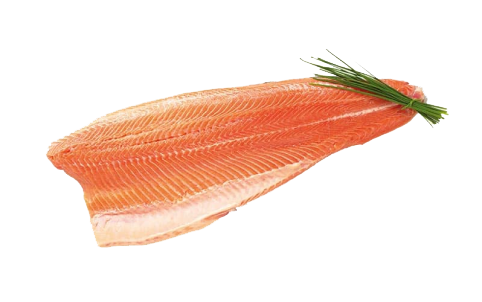
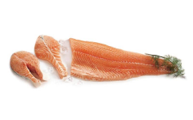
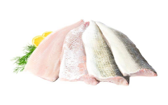
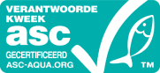
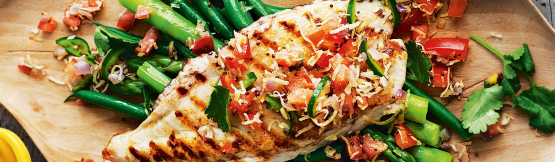
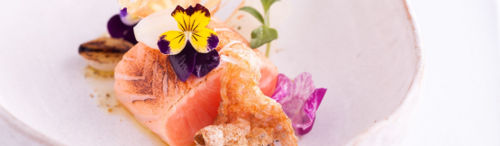
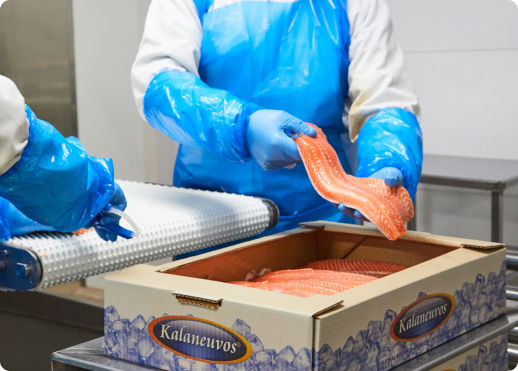

Main fish products
The fish is of premium quality due to aquaculture and harvest in accordance to ASC certified criterias and with optimal combination of fish feed during the farming syclus
-
-
 Trout fillet
Oncorhynchus mikiss
-

Salmon whole
Salmo salar
-
 Salmon c-cut fillet
Salmo salar
-

Whitefish
Coregonus lavaretus
-
 Whitefish fillet without
skin and scaled
-

Farmed brown trout
Salmo trutta
-

Farmed brown trout fillet
Salmo trutta
Our brochures
Salmofan and quality
Color test, salmonbellies ensures clients demand are met and that producer delivers accordingly
-
We are MSC certified(MSC-C-55443), look for the blue MSC label -
We are ASC certified(ASC-C-01179), look for the aqua green ASC logo
Kalaneuvos Oy’s product selection includes fresh, smoked, cold smoked, frozen, slightly salted and marinated products. We provide fish products in several variants – caviar, whole fish, fillets, slices, portions, cubes, boneless and skinless fish. We have the ISO 9001 Quality Management System and the FSSC 22000 Food Safety System Certification, which provide a framework for effectively managing our organisation’s quality and food safety responsibilities. We also have the ISO 14001 Environmental Management System.
Fish by Kalaneuvos are caught or farmed primarily in the following locations
-
Trout
Farmed on the Finnish coast, in Åland and in Sweden
-
Salmon
Farmed on the Lofoten Islands region of Northern Norway and on the north side of the Lofoten Islands
-
Whitefish (farmed)
The Archipelago Sea
-
Whitefish (wild)
Lake Lappajärvi, Lake Kyrösjärvi, the Archipelago Sea, Åland
-
Whitefish (Canada)
The Canadian Great Lakes
-
Baltic herring
The Bothnian Sea and the Archipelago Sea
-
Vendace
Lake Puruvesi Lake Saimaa Lake Pyhäjärvi in Säkylä
-
Northern pike
Lake Lappajärvi Lake Kyrösjärvi Lake Pyhäjärvi in Säkylä
-
Pike perch (freshwater)
Lake Lappajärvi Lake Pyhäjärvi in Pirkanmaa Lake Kyrösjärvi Lake Vesijärvi in Lahti
-
Pike perch (sea)
The Vaasa sea area, the Turku Archipelago
-
Perch (freshwater)
Lake Lappajärvi Lake Pyhäjärvi in Pirkanmaa Lake Kyrösjärvi
-
Perch (sea)
Kvarken
-
Brown trout (farmed)
Åland
-
Arctic char (farmed)
Sweden
-
Mackerel
Ireland and Scotland, grown in the north-east Atlantic
-
Cod
Sweden and Denmark area, the North-East Atlantic
Recipes
-
 Wester Ross seared salmon loin, fennel pollen and sweet onion
This delicious starter by Michelin-starred chef Lisa Allen has many elements that come together to create a striking dish, bursting with vibrant colours. To give the salmon a smoky, charred flavour the chef finishes the dish by...
-
 Wester Ross seared salmon loin, fennel pollen and sweet onion
This delicious starter by Michelin-starred chef Lisa Allen has many elements that come together to create a striking dish, bursting with vibrant colours. To give the salmon a smoky, charred flavour the chef finishes the dish by...
Why trout is the new salmon
Trout tend to more firm in the muscle tissue then salmon when cooking, it grows faster in aquaculture then salmon and we have ready trout for delivery all year around to the markets
Markets

Salmonbellies focuses on Switzerland, and Israel by all-in kosher products on demand with rabbinical supervision.
But just to let you know that our products are approved for import to China, so alot of focus is streamlined towards the Asian markets herein; Japan, China, Taiwan, South Korea, Thailand, The Philippines, Vietnam and India.
Our main focus for smolt sales is towards Norwegian trout fish farmers, and Canada for rainbow trout roe.
The team Salmonbellies is always open to help and assist with our competence and skills within aquaculture in other countries and markets. Mr. Alexander Refsnes have close ties to researchers in Norway on fish health and fish pathology related to aquaculture of trout and salmon from the time he studied for his degree in Aquaculture, and where he discovered his new passion for the aquaculture industry on salmon species, and feed regimes.
News
-
Expo global 2019
The team of Salmonbellies enjoyed the seafood Expo global 2019, and thank you to all participants who filled in our questionnaire during our many meetings in the crowdy melting pot in Bruxelle this year
-
A new company in Minsk
4th. July 2019, team of Salmonbellies launches a new company in Minsk, Belarus namely Lyxfish CJSCthis company will act as Scandinavia`s fish farmers gateway to Belarus export markets, with the main focus on trout and salmon products.